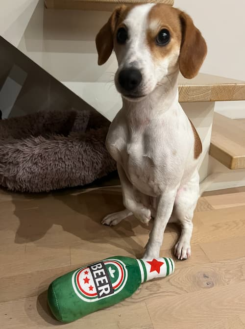

Min hund Lily
Lily er 3 år gammel og føles som en kat i en hunds krop. Hun er stædig, kan bære nag, men er samtidig utrolig sød.
Hun elsker solpletter på gulvet, lange lure og at blive båret i sin taske.
På gåture bestemmer hun tempoet med sin stædige charme, men hjemme er hun den mest kærlige sofakammerat. Hun kan godt bære nag, hvis hun ikke får sin vilje, men et par nus bag øret smelter hende altid.
Lily er kort sagt en personlighed med poterEgenskaber
- Stædig
- Bærer nag
- Kærlig og sød
- Legesyg
- Vagtsom
- Madglad
- Hyggetrold
- Kræver opmærksomhed
- Kan lide at sove i sofaen
- Elsker at gå ture
- Kan lide at være i centrum

Lily elsker mad, hun er hurtigere end lysetshastighed når køleskabet bliver åbnet
Favoritmenuen er alt fra sprøde godbidder til en ostepops, og hun har en sjette sans for knitrende poser.
Man når knap at blinke, før hun sidder pænt og giver pote for en smagsprøve.
Om racen:
Lily er en dansk-svensk gårdhund, en lille, robust og alsidig hunderace kendt for sin intelligens og livlige personlighed.
Oprindeligt avlet til at være en arbejdshund på gårde, er den nu en populær familiehund i Danmark og Sverige.- Temperament: Venlig, vågen, nysgerrig - og lidt stædig.
- Aktivitetsbehov: 1-2 gode ture dagligt + leg/træning.
- Størrelse: Lille-mellem (omkring 7-12 kg).
- Levetid: Ca. 12-15 år.
- Velegnet til: Familiehund, nose work, spor, tricks - og selskab.
Læs mere om menneskets bedste ven på
petlux